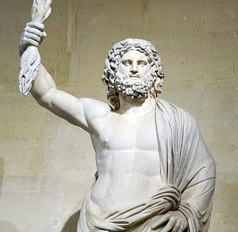
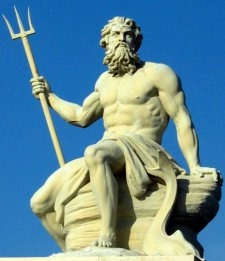
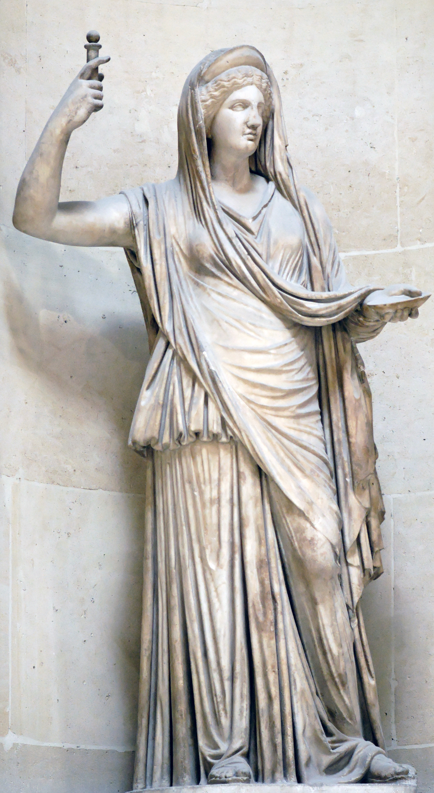
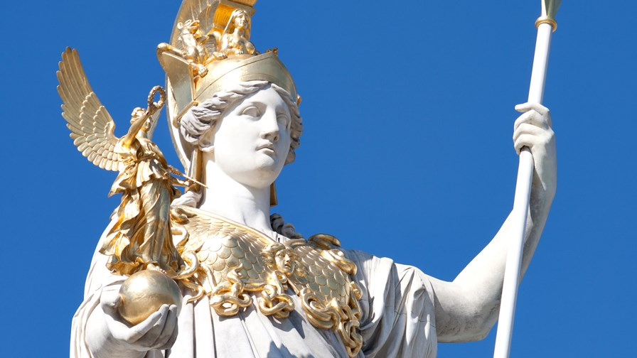
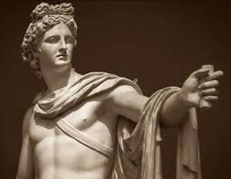

 Zeus is de oppergod van de Griekse goden en de god van het hemelrijk, de lucht en het weer. Hij werd oppergod, nadat hij zijn vader, Kronos, verslagen had.
Meneer Roos - 2018: "Als Zeus zijn broek nou aanhield, bestond de helft van de Griekse mythologie niet."
Lees hier meer over Zeus
 Poseidon is de Griekse god van het water, de zee, paarden en aardbevingen. Je kan hem altijd herkennen aan zijn drietand. Zijn broers zijn Zeus en Hades. Zijn drietand heeft hij gekregen van de cyclopen.
Lees hier meer over Poseidon
 Hera is de godin van het huwelijk en vruchtbaarheid. Zeus is haar man. Ze heeft vaak in haar hand een staf en een pauw. In veel mythologische verhalen is ze jaloers, omdat Zeus niet bepaald trouw was aan haar.
Lees hier meer over Hera
 Pallas Athena is de godin van de hemel, wijsheid, krijgskunst en vrede. Haar vader is Zeus en ze is geboren omdat Zeus hoofdpijn had, nadat hij de godin Metis had opgegeten. Hij liet toen zijn hoofd openhakken door een andere god en daar, uit zijn hoofd, kwam Pallas Athena in een volledige wapenuitrusting.
Lees hier meer over Pallas Athena

Apollo is de god van de zon, muziek, poëzie, geneeskunde en schone kunsten. Hij is de zoon van Zeus, maar niet die van Hera. Apollo is ook de god die verwant is aan het orakel van Delphi. In zijn tempel in Delphi werden de orakels uitgesproken door een priesteres, die de Pythia werd genoemd.
Lees hier meer over Apollo